简介¶
贝塞尔曲线制作的鸟的标志.
曲线和曲面是Blender物体的特殊形式. 它们是由数学函数表示的而不是一系列点.
Blender提供了贝塞尔曲线和非均匀有理B样条(NURBS). 贝塞尔曲线和NURBS曲线以及曲面由一组“控制点” (或者“控制顶点”)定义,这些控制点定义了一个“控制多边形”.
贝塞尔和NURBS曲线都是以它们的数学定义命名, 选择他们常常更多考虑的是场景背后的计算而不是建模者透视图的展现. 贝塞尔曲线通常更直观因为它们在你设置的控制点开始和结束, 但是NURBS曲线对计算机的计算是更高效的, 当一条曲线有太多的弯曲和转弯时.
使用曲线代替多边形网格的主要优势是, 曲线可以通过更少的数据来定义, 因此在建模时使用较少的内存和存储空间就可以产生效果. 然而, 这种程序上的模拟的曲面会增加渲染时的需求.
某些建模技术, 比如 沿路径挤出轮廓, 可能仅用到曲线. 另一方面, 使用曲线时, 点层级控制是非常困难的,如果需要良好的控制, 网格编辑 或许是一个更好的建模选择.
贝塞尔曲线最常用于设计字母或标志. 他们也广泛应用于动画, 既可作为物体移动的路径,也可作为F-曲线 改变物体的属性的时间函数.
曲线单元¶
添加曲线菜单.
在物体模式, 添加曲线 菜单, Blender提供了五种不同的曲线基本单元:
- 贝塞尔曲线
- 添加一个有两个控制点的开放的 2D 贝塞尔曲线.
- 贝塞尔圆环
- 添加一个封闭的, 圆形的 2D 贝塞尔曲线 (由4个控制点组成).
- NURBS曲线
- 添加一个开放的 2D NURBS曲线, 有四个控制点, 有统一的 节点.
- NURBS圆环
- 添加一个封闭的, 圆形的 2D NURBS曲线 (由8个控制点组成).
- 路径
- 添加一个由五个排成一行的控制点组成的开放的NURBS 3D 曲线, 端点 节点和曲线路径 设置启用.
贝塞尔曲线¶
编辑贝塞尔曲线主要使用的控制元素是控制点和控制柄. 线段(实际的曲线) 在两个控制点之间. 在下图中,控制点在粉红色线段的中间而控制柄由控制点的延伸组成. 默认情况下线段的箭头代表的方向是物体将要拥有的相对 速度和运动的方向当沿着曲线运动时. 这个可以通过自定义的 F-曲线 修改.
编辑模式下贝塞尔曲线.
编辑贝塞尔曲线¶
可以通过移动控制点和控制柄的位置来编辑贝塞尔曲线.
- 添加一条曲线通过
Shift-A呼出添加菜单, 依次选择 . - 按
Tab进入到编辑模式. - 选择一个控制点来回移动它.
使用
LMB确认新的控制点的位置, 或使用RMB取消. - 现在选择一个控制柄来回移动它. 注意它是如何影响曲线的曲率变化的.
添加更多的控制点
- 选择至少两个相邻控制点.
- 按
W然后选择细分. - 视需要, 细分后你可以立即按
F6修改细分的数量.
注意挡在编辑模式下的时候你不能直接选择一条线段.要想这么做,选择组成你想要移动的线段的所有控制点.
有四种贝塞尔曲线控制柄类型.
他们可以使用通过按V 然后在出现的列表中选择,或者按适当的快捷键组合. 控制柄可以旋转, 移动,
缩放和法向缩放像网格中的任何顶点一样.
贝塞尔曲线控制柄类型¶
- 自动
V-A 这个控制柄有一个完全自动的长度和方向,由Blender设置来确保最平滑的效果. 这些控制柄在移动时会转换为对齐 控制柄.
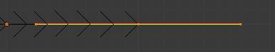- 矢量
V-V 控制柄的两部分总是指向前一控制柄或者后一控制柄, 允许你去创建由直线组成或者拥有锐角的曲线或者区间. 矢量控制柄在移动时会转换为自由 控制柄.
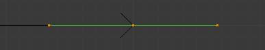- 对齐
V-L 这些控制柄总是位于一条直线上, 生成一个没有锐角的连续曲线.
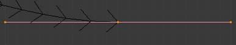- 自由
V-F 控制柄相互之间是互相独立的.
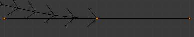
此外,快捷键V-T可以用于自由和对齐控制柄类型之间切换.
曲线属性¶
曲线属性可以在 属性标题栏 中的 物体数据 选项设置(下图蓝色所示).
形状¶
曲线形状面板.
- 2D和3D曲线
- 默认情况下,新建曲线被设置为3D, 这就意味着控制点可以放置在3D空间的任意位置. 曲线也可以被设置为2D,这样控制点将会被约束到曲线自身XY坐标.
- 分辨率
分辨率 属性定义了每对控制点间计算的点的数量. 曲线可以变得更加或者较少平滑通过增加和减少各自的分辨率. U向预览 设置定义了在3D视图中的分辨率当U向渲染设置定义了曲线的渲染分辨率时. 如果U向渲染设置为0, 3D视图和渲染分辨率将会共用U向预览的设置.
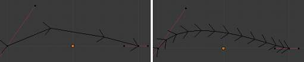曲线的分辨率3(左)和12(右).
- 扭曲
使一个3D曲线的控制点不位于曲线自身的XY轴面. 这将会使曲线产生一个影响曲线法向的扭曲. 你可以修改曲线扭曲的计算方式通过选择下拉菜单最小值, 切向 and Z朝上 选项.
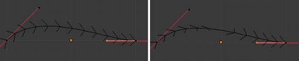曲线扭曲为最小值(左)和切向(右).
- 填充
填充确定一条曲线在倒角后的显示方式(详情见下面倒角). 当设置为一半 (默认) 曲线显示为圆柱体的一半. 填充形变结果选项允许您指示曲线是否在应用形变关键帧和修改器之前或之后被填充.
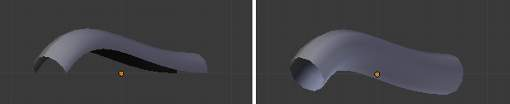曲线填充一半(左)和全部(右).
- 路径/曲线形变
- 这选项主要应用在使用曲线作为路径或者使用曲线形变属性时. 半径, 拉伸 and 紧固边框 选项控制物体使用曲线的方式 , 查看下面链接了解更详细信息.
几何体¶
曲线几何体面板.
- 修改
- 偏移量
- 默认情况下, 文本物体作为曲线处理. 偏移量选项修改字母间的距离.
- 挤出
- 将会沿着曲线自身Z轴正向和负向挤出.
- 倒角
- 深度
改变倒角尺寸
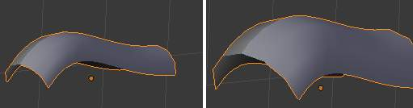应用不同倒角深度的曲线.
- 分辨率
修改倒角的平滑度
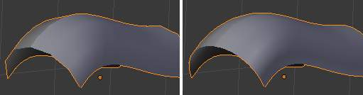应用不同分辨率的曲线.
- 锥化物体
锥形化一条曲线使其在一端变细变尖.你可以自始至终修改锥形物体的锥形比例通过移动/缩放/旋转锥化物体控制点.锥化物体只能是另一条曲线.编辑锥化物体的控制柄和控制点将引起原物体的形变.
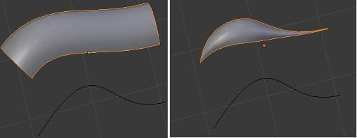应用贝塞尔曲线锥化物体之前(左)和之后(右).
- 倒角物体
用一条贝塞尔曲线作为倒角物体倒角一条贝塞尔曲线通常会使它看起来像一个平面,当使用一个贝塞尔圆环作为倒角物体会使它看起来像一个圆柱. 倒角物体只能是另一条曲线.编辑倒角物体的控制柄和控制点将引起原物体的形变. 鉴于可用的选项,最好实验一番以观察操作的结果.
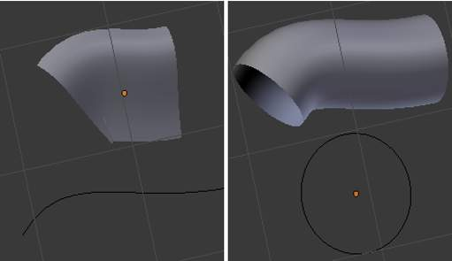应用贝塞尔曲线(左)和贝塞尔圆环(右)做倒角物体的曲线.
- 封盖
- 将倒角曲线的两端封口.
- 映射锥化
应用了锥化物体的曲线和修改了的起始/结束 倒角因子,映射锥化 选项将对曲线的倒角部分(不是整条曲线)应用锥化.
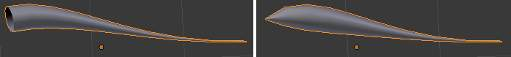没有(左)和应用了(右)映射锥化的曲线.
- 起始倒角因子和结束倒角因子
这些选项确定了曲线开始倒角操作的位置. 增加起始倒角因子到 0.5 曲线将会从距离曲线开始50%的距离开始倒角(实际上曲线变短). 减少结束倒角因子 值0.25 曲线将会从距离曲线结束25%的距离开始倒角(同样, 曲线变短).
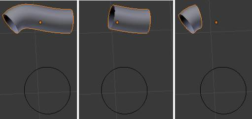没有应用倒角因子(左),应用50%起始倒角因子(中)和应用25%结束倒角因子(右).
激活的样条¶
曲线激活的样条面板.
激活的样条面版变得可用在编辑模式.
- 循环
- 闭合曲线.
- 分辨率
- 通过改变细分的数量来修改每一部分的平滑性.
- 插值类型
- 倾斜
- 修改倾斜部分的计算方式.
- 半径
- 修改倒角曲线半径的计算方式.
效果显而易见当法向缩放一个控制点
Alt-S. - 平滑
- 平滑曲线的法线
非均匀有理B样条 (NURBS)¶
贝塞尔物体和NURBS物体之间一个最主要的不同就是贝塞尔曲线是近似的. 例如, 贝塞尔圆环近似的一个圆环,然而NURBS圆环是一个精确的圆环. NURBS原理是一个非常复杂的话题. 有关介绍, 请查阅维基百科页面.实际上, 上面讨论的许多贝塞尔曲线操作可以以同样的方式应用到NURBS曲线. 接下来集中讲的只是NURBS曲线唯一的方面.
编辑 NURBS 曲线¶
NURBS曲线通过移动控制点的位置来编辑.
- 添加一条曲线通过
Shift-A呼出添加菜单, 依次选择 . - 按
Tab进入编辑模式. - 选择一个控制点来回移动它.
使用
LMB确认新的控制点的位置,或者使用RMB取消. - 如果添加额外的控制点, 选中他们两者, 按
W然后选择细分. 细分后立即按F6确定细分的数量.
激活的样条¶
NURBS激活的样条面板.
- 节点
NURBS物体的一个特征就是节点矢量. 这是一系列的数值用于确定对曲线上的控制点的影响.然而你并不能直接编辑节点矢量, 你能通过激活的样条面板的端点和贝塞尔选项改变它们 .注意端点和贝塞尔设置仅应用与未封闭的NURBS曲线.
- 循环
使NURBS曲线成环.
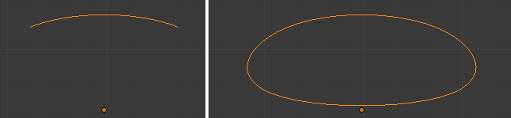应用循环的NURBS曲线.
- 贝塞尔
- 使NURBS曲线表现像贝塞尔曲线.
- 端点
使曲线连接到末端控制点. 循环必须禁用该选项才能生效.
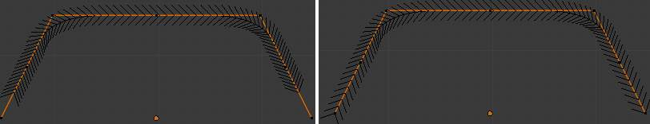启用端点的NURBS曲线.
{kind=link}
- 次序
NURBS曲线次序决定了曲线上控制点的影响区域. 较高的次序值意味着单个控制点有较大的影响作用到较大的曲线相对比例. 次序的有效值范围为2-6, 取决于曲线呈现的控制点的数量.
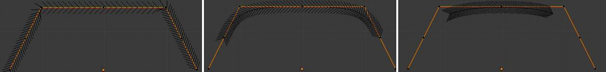NURBS曲线次序值为2(左),4(中)和6(右).
{kind=link}